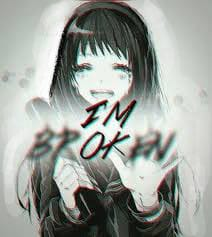

Subtitulo aqui
Dentro de esta enfermedad, nos encontramos más de 200 comorbilidades o síntomas. De los cuales, algunos, se presentan de forma constante, y otros de firma fluctuante. Desembocando en graves crisis o brotes, de las que nunca se vuelve a recuperar el último estado anterior. Dejando secuelas que avanzan, desde puntos de no retorno. A pesar de ello, está considerada una dolencia crónica, y no degenerativa. Como nos viene demostrando, la propia experiencia.
Cada vez, queda expuesto con más relevancia y frecuencia. Que al margen de la propensión genética, que de inicio, se indicó como el factor con más peso. Entran en juego otros muchos atenuantes y agravantes ya demostrados, y otros a los que se le da mucha importancia en la actualidad, debido, al perfil de pacientes sospechosamente similar, en la mayoría de los casos.
Subtitulo aqui
Las pruebas diagnósticas, suelen ser muy costosas, y no tienen indicadores específicos que puedan dar un diagnóstico claro y temprano. Por lo que se diagnóstica por eliminación, tras muchas pruebas, que suelen dar datos anómalos y extraños, que llevan a los especialistas, a darlo por valido como resultado.
Esta dolencia no tiene cura. Se debería paliar mediante un equipo multidisciplinar, que trabaje todos los aspectos que quedan expuestos dentro de del SSC. Pero actualmente, tanto por la falta de expertos especialistas en la materia, así como la carencia de medios económicos enfocados a la salud, en nuestro país. Actualmente nos vemos desamparados por los organismos oficiales. Mientras el número de personas con esta enfermedad, crece de forma exponencial. Los expertos y los pacientes, seguimos estudiando sin parar, para encontrar más respuestas, y nuevas formas de mejorar, nuestra situación de vida.